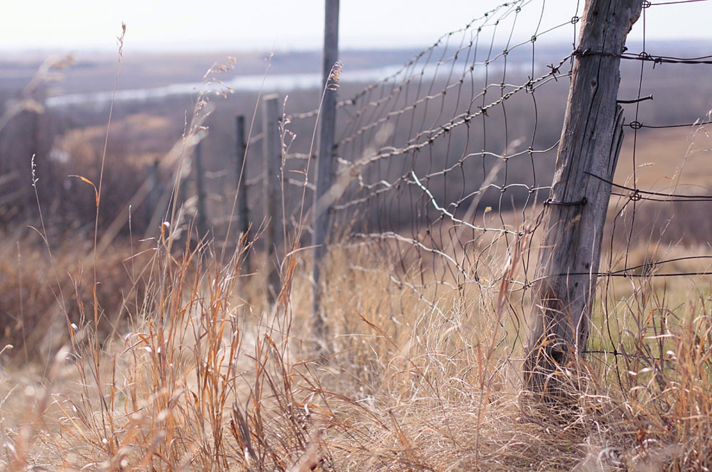

The data box: Mitchell's Canadian ledger
Joni Mitchell in numbers - Born: Roberta Joan Anderson, November 7, 1943, Fort Macleod, Alberta — the daughter of an RCAF flight lieutenant and a teacher. - Raised: Saskatoon, Saskatchewan, from toddlerhood — the city she has always called home. - The polio year: 1954, age nine — a polio epidemic hospitalized her for weeks; she sang in the ward to entertain other children, and the illness left its mark on her hands and her relationship with her body. - First art: Painting, before music — she studied art in Saskatoon and later at the Alberta College of Art in Calgary, and she has called herself "a painter derailed by circumstance." - The leaving: 1965 — married folk singer Chuck Mitchell, moved to the US, divorced, stayed. - The distance: Fifty years of famous ambivalence about her home country — she has criticized Canada's conservatism and its cold, while writing some of the most Saskatchewan songs ever sung. - The homecoming(s): The 1969 Song to a Seagull cover shot on a Canadian beach; her 2000s return to the fold; the 2022 surprise performance at the Newport Folk Festival's Joni Jam; the 2023 Library of Congress Gershwin Prize, celebrated on a stage full of admirers.
Chapter one: the prairie laboratory
Saskatoon in the 1950s gave a strange kid an unusual education. There was the landscape itself — Mitchell has described the prairie's flatness as a kind of visual music, the horizon an endless staff line. There was the weather, which taught austerity. There was the polio ward, which taught her to sing for survival and left her with a nonchalance about physical fragility. And there was the radio: classical, country, and — fatefully — folk, which she taught herself on a ukulele bought with polio-recovery allowance money. Everything in her mature style — the open tunings, the painterly chords, the conversational cadences — has a prairie antecedent.
Chapter two: art school and the escape hatch
Mitchell's first artistic identity was visual. She painted through art school in Calgary, absorbing the abstraction that would later make her guitar tunings and harmonic language unlike anyone else's. (Her famous open tunings — "Joni tunings," as guitarists call them — let her voice move like a brush across a canvas of ringing strings.) Music was the escape hatch from a marriage and a country that felt too small; she has said she crossed the border with $35. But the painter's eye never left: listen to "The Circle Game" and hear seasons rendered like canvases, or the color-drenched "Both Sides Now" — written at 23, and already a lifetime of looking.
Chapter three: what she took — and what she left
Mitchell's relationship with Canada is the great ambivalence of her biography. She left young, married American, became American in every practical sense, and spent decades politely deflecting Canada's claims on her — criticizing the country's caution, its cold, its parochialism. And yet the songs kept confessing: "River" is a Christmas song about wanting to escape California for a frozen river she can skate away on — a prairie image if ever there was one. Hejira, her 1976 masterpiece of driving and exile, is structured like a trans-Canada highway album even as it crosses America. She took the prairie's wide-angle lens and its stoicism; she left the cold. Canada, characteristically, kept the receipts.
Chapter four: the long homecoming
Time has softened the ambivalence. Mitchell returned to Canadian stages more often in her later years, accepted her country's honors, and let the Joni Jam — the informal living-room singalongs organized around her by Brandi Carlile — become a public act of legacy. When she sang "Both Sides Now" at Newport in 2022, seated between generations of admirers, it read as what it was: a Canadian artist receiving, at last, the communal welcome her country's music had always owed her.

Five songs that are secretly Saskatchewan
- "River" — the skating escape fantasy; a prairie winter rendered in jazz chords.
- "The Circle Game" — seasons turning like canvases on a wall.
- "A Case of You" — kitchen-party cadence under the metaphors.
- "Hejira" — exile measured in highway lines; the trans-Canada in spirit.
- "Both Sides Now" — clouds over the prairies, seen from both sides of a life.
Frequently asked questions
Where did Joni Mitchell grow up?
Saskatoon, Saskatchewan — born in Fort Macleod, Alberta, in 1943 and raised in Saskatoon from early childhood. She attended art school in Calgary before moving to the US in 1965.
Is Joni Mitchell Canadian?
Yes — born and raised in Canada, though she built her career in the United States and has held complicated, often critical feelings about her home country.
What did Saskatchewan give Joni Mitchell?
Her painter's eye (she trained as a visual artist), the prairie's wide-open sense of space and horizon, the self-reliance of a polio-surviving childhood, and the folk-music radio that taught her to write songs.